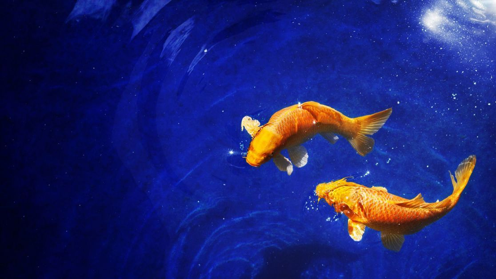

Риби населяють світовий океан уже приблизно 500 мільйонів років. Риби живуть майже в усіх водоймах нашої планети – від безкрайніх океанів і до невеликих струмочків. Їх видів налічується близько 30 тисяч, і вчені постійно відкривають нові, невідомі людям раніше.
Риби бувають різних форм, кольорів і розмірів. Наявність зябер, плавців і вода як єдине середовище проживання – ось що відрізняє цей вид тварин від всіх інших.
● Риби це холоднокровні хребетні тварини, отже, температура їх тіла залежить від температури води що їх оточує.
● Мулистий стрибун, це риба яка проводить більшу частину часу поза водою, і може «прогулюватися» по суші на власних плавниках. У зябрах у стрибунів довгий час зберігається невеликий запас води. Вони також можуть дихати через пори своєї вологої шкіри.
● Найдивніше на планеті переміщається морський коник. Він плаває вертикально, керуючи спинним плавцем, і може рухатися в будь-якому напрямку: назад, уперед, вгору і вниз. Коли коник хоче зупинитися, він закручує хвіст навколо водоростей, а якщо йому загрожує небезпека, змінює розмальовку, маскуючись.
● Риби використовують звуки низьких тонів, щоби передавати повідомлення один одному. Вони стогнуть, гарчать, хриплять, бубонять, шиплять, свистять, скриплять і верещать. Вони тріщать кістками і скриплять зубами. Проте, у риб немає голосових зв’язок. Для виробництва звуку вони використовують інші частини тіла, як-от вібруючі м’язи, що розташовані навпроти плавального міхура.
● Більшість брендів губної помади містять речовини що входять до складу риб’ячої луски. Вони надають помаді неповторний блиск.
● Про рибу-пилу знають усі. Насправді це різновид ската. Її можна сміливо віднести до найбільших підводних істот, адже вона виростає до 6–8 метрів! На морді в рибки розташований пилкоподібний виріст довжиною два метри, утиканий гострими зубами. З його допомогою риба-пила збирає їжу на дні і вбиває здобич: вона врізається в зграю риб і приголомшує їх ударами «пили».
● Найбільші очі в гігантського кальмара. Кожне око має діаметр 40 см і містить понад 1 млрд світлочутливих клітин. Це приблизно в 100 разів більше ніж око людини! Але кальмари бачать усе тільки в чорно-білому світлі, так що заздрити їм явно не варто. А буває, що в кальмарів очі різного розміру.
● Летюча риба вистрибує з води зі швидкістю 32 км/год! Відштовхуючись хвостом від поверхні води, вона злітає в повітря, а коли падає, знову вдаряє хвостом по воді і знову летить вгору. Трапляється, що риби користуючись повітряними потоками злітають на висоту до шести метрів і летять над водою щонайменше 400 м.
